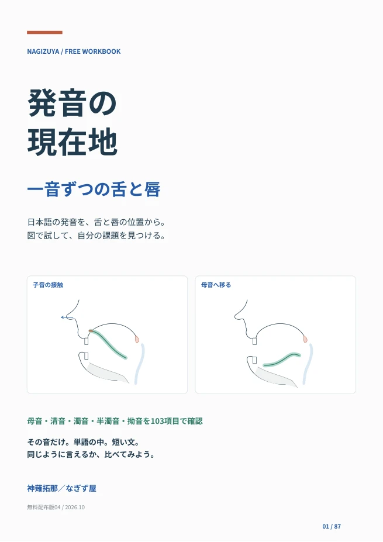
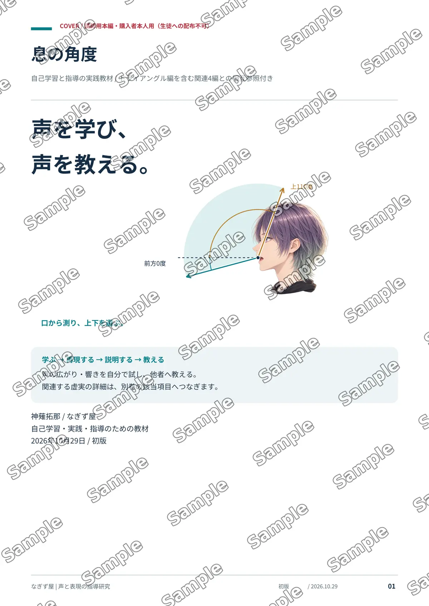
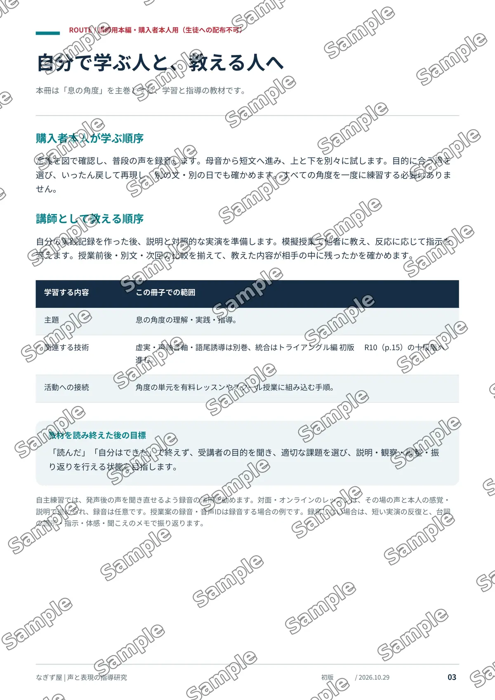
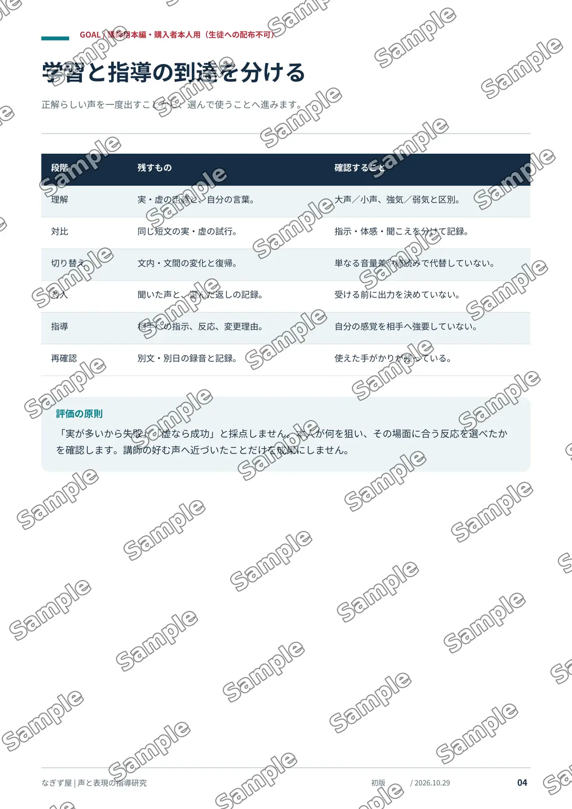

単巻
必要な課題を選ぶ
声優・ナレーター・声の指導者へ
自分の声を学び直す。その経験を、次のレッスンへ。
図解・実習・指導の手順で学ぶ、全16巻のPDF教材。
自習・講師用 生徒用資料付き
図解で理解感覚を言葉と図で整理
比較実習違いを体感して身につける
指導の手順伝えるための流れがわかる
記録シート学びを残し、次に生かせる

無料PDF・全87ページ
「滑舌が悪い」を、ひとまとめにしない。
気になる一音から、自分の現在地を確かめてみませんか。

日本語の発音を、舌と唇の位置から。
母音・清音・濁音・半濁音・拗音を103項目で確認。舌の位置や触れる場所、唇の形を図で見直し、一音・単語・短い文で同じように言えるかを比べる無料教材です。
全部を順に練習する必要はありません。気になる音から始めてください。図は位置関係の目安です。自分の感覚と聞こえの両方で確かめます。
無料PDFをダウンロード自分の課題が見えたら、その先へ。
一音の発音を確かめたら、次は息の使い方、響きや声の密度、言葉の運び、表現へ。
この先で紹介する有料教材では、基礎5巻・技術11巻を通じて、図解と比較実習で自分の声を学び、教えるための手順まで整理します。
「何となくできた」から、「何を変えたか説明できる」へ。まずは必要な課題の一冊から、学びを深められます。
声の経験を、ことばにして整理することで、
自分の学びも、伝える力も深まります。
感覚ではできるのに、
再現できない。
声の違いはわかるのに、
説明できない。
教えるときの手順が、
整理できない。
同じ言葉で比べながら、自分の感覚と聞こえを整理します。
図解と解説で理解する
実習で体感する
聞こえの違いを整理する
学んだ手順を指導へ
基礎編5巻と、課題を深める技術編11巻。
気になる教材をタップして、内容を確認できます。
表現の仕組みを学ぶ
息の角度 → 虚実 → 声軸・音軸 → 語尾誘導。
トライアングルで、それぞれの技術をつなぎます。
課題から、専門技術へ
必要な課題から読み、関連する巻へ戻って学べます。
図解・実習・指導の手順・記録シートまで。
実際のPDFの一部をご覧いただけます。



タップで拡大図解解説感覚を具体的に理解する
比較実習違いを体感して、身につける
指導の手順教える流れを具体的に学ぶ
記録シート自分の試行を残し、成長につなげる
全16巻それぞれ、冒頭4ページを確認できます。
理解し、試し、自分の変化を確かめる。
学んだ手順を整理し、
担当生徒への指導に活用する。
購入者本人用の本編と、生徒用の配布資料を分けています。
本編のテキストは購入者本人のみがご利用いただけます。
指定の生徒用資料を、利用規約に沿って担当生徒へ配布できます。
目指すのは、オンラインレッスンなしで
「声優専門学校の講師やスクールの講師に」と誘われる著者のスキルを持って、教える側に立つ人を育てたい。
そこに対面やオンラインのレッスンを排して、レベルの高い人材が育ち、講師となりプレイヤーとしても活動する。
そんな未来は作れないだろうか？
必要な課題を選ぶ
表現の仕組みを、
まとめて学ぶ
基礎５巻セットのみ。
noteは55,000円・２記事特典付き
専門課題を深める
BOOTHの販売ページで技術11巻セットを選べます。
基礎と技術をつなげて学ぶ
BOOTHで見る※ BOOTHでは共通の販売ページから、基礎５巻・技術11巻・全16巻の各セットを選べます。ココナラでは基礎編・技術編それぞれの販売ページへ移動します。単巻もBOOTHの同じ販売ページで選べます。
自分で試す学習から、説明や指導の手順まで、段階的に学べます。まずは自分の声で試し、違いを言葉にするところから始めます。
実演音声は付属しません。図解と文章、実習で学ぶPDF教材です。自主練習では自分の録音を活用でき、レッスンではその場の声や本人の感覚・説明を照らし合わせて使用できます。レッスンの録音は任意です。
配布できるのは指定の生徒用資料のみです。購入者本人用の本編は配布できません。対象教材を購入した講師から直接指導を受ける生徒へ、利用規約に沿って配布できます。
神薙 拓那 なぎず屋
基礎編 ① ／ 自習・講師用
口を起点に、息の角度を捉える。
閲覧用プレビューでは基本表示を使用します。通常のブラウザでは全16巻の本文を切り替えられます。
基礎編 ② ／ 自習・講師用
伝えたい声と、自然にこぼれる声を使い分ける。
閲覧用プレビューでは基本表示を使用します。通常のブラウザでは全16巻の本文を切り替えられます。
基礎編 ③ ／ 自習・講師用
声の支点を、動かす・保つ。
閲覧用プレビューでは基本表示を使用します。通常のブラウザでは全16巻の本文を切り替えられます。
基礎編 ④ ／ 自習・講師用
相手の語尾を受け、次の語頭を選ぶ。
閲覧用プレビューでは基本表示を使用します。通常のブラウザでは全16巻の本文を切り替えられます。
基礎編 ⑤ ／ 自習・講師用
個別の技術を、ひとつの表現へつなぐ。
閲覧用プレビューでは基本表示を使用します。通常のブラウザでは全16巻の本文を切り替えられます。
技術編 ① ／ 自習・講師用
自分の基準を、身体と声から見直す。
閲覧用プレビューでは基本表示を使用します。通常のブラウザでは全16巻の本文を切り替えられます。
技術編 ② ／ 自習・講師用
吸う・支える・吐くを整理する。
閲覧用プレビューでは基本表示を使用します。通常のブラウザでは全16巻の本文を切り替えられます。
技術編 ③ ／ 自習・講師用
口と喉の空間を、連動として捉える。
閲覧用プレビューでは基本表示を使用します。通常のブラウザでは全16巻の本文を切り替えられます。
技術編 ④ ／ 自習・講師用
響きの中の、埋める・抜くを設計する。
閲覧用プレビューでは基本表示を使用します。通常のブラウザでは全16巻の本文を切り替えられます。
技術編 ⑤ ／ 自習・講師用
自分の特徴を、役づくりの材料にする。
閲覧用プレビューでは基本表示を使用します。通常のブラウザでは全16巻の本文を切り替えられます。
技術編 ⑥ ／ 自習・講師用
意味を読み、表現の選択へつなぐ。
閲覧用プレビューでは基本表示を使用します。通常のブラウザでは全16巻の本文を切り替えられます。
技術編 ⑦ ／ 自習・講師用
限られた時間の中で、伝わり方を整える。
閲覧用プレビューでは基本表示を使用します。通常のブラウザでは全16巻の本文を切り替えられます。
技術編 ⑧ ／ 自習・講師用
子音の入りと母音の続きから、歌を組み立てる。
閲覧用プレビューでは基本表示を使用します。通常のブラウザでは全16巻の本文を切り替えられます。
技術編 ⑨ ／ 自習・講師用
高出力の声を、支えと圧縮から考える。
閲覧用プレビューでは基本表示を使用します。通常のブラウザでは全16巻の本文を切り替えられます。
技術編 ⑩ ／ 自習・講師用
収録条件をそろえ、音の違いを確かめる。
閲覧用プレビューでは基本表示を使用します。通常のブラウザでは全16巻の本文を切り替えられます。
技術編 ⑪ ／ 自習・講師用
聞こえと本人の説明から、次の試行を選ぶ。
閲覧用プレビューでは基本表示を使用します。通常のブラウザでは全16巻の本文を切り替えられます。